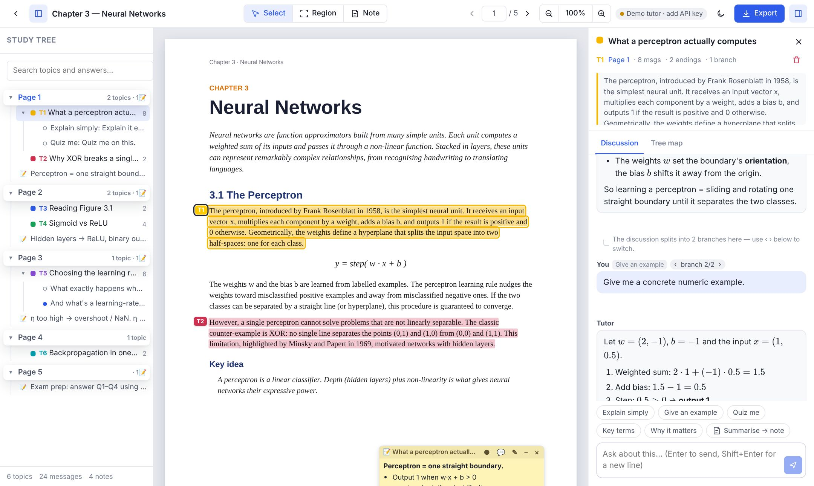
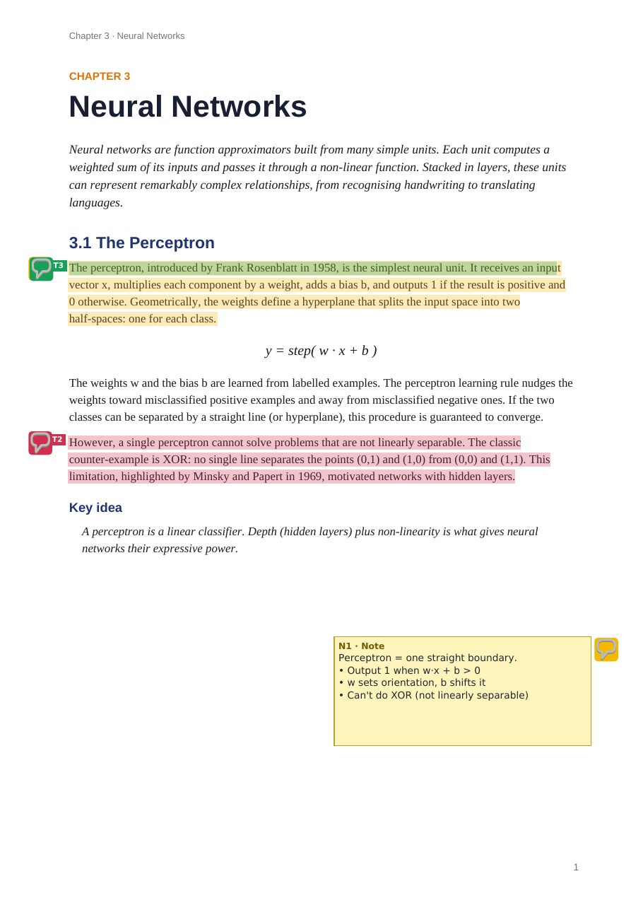
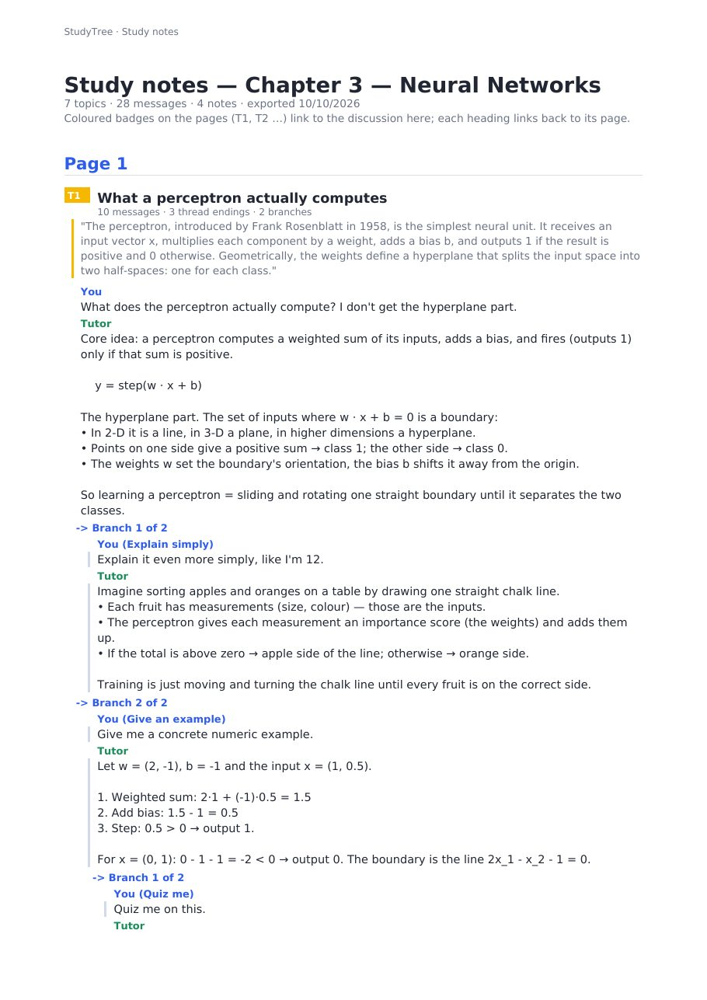

Every question about a textbook,
organised as a tree
on the page it's about.
Highlight a passage or box a diagram, ask, branch, and pin the answers back onto the page. Every learner leaves with a study map instead of a lost chat scroll.
AI chat made reading easier to ask about,
and harder to learn from.
- Answers live in a side panel, disconnected from the sentence or figure they explain.
- One long linear scroll. Every follow-up, tangent and retry piles up; good explanations get buried.
- Exploring alternatives destroys context. “Explain it simpler” and “give an example” compete for the same thread.
- Nothing goes back into the book. The PDF you revise from has none of what you learned.
What research on reading tools says
A 2025 study of AI margin notes argues that comments tied to specific text beat chat in a separate side panel, because the side panel disconnects the discussion from its context.
HCI work in 2026 (Branchat, CanvasConvo, Conversation Tree Architecture) shows learners need branching, revisitable conversations, but these are research prototypes, not reading products.
A study tree that lives on the page.
Each page holds topics. Each topic holds a discussion that can branch, and every branch ends in a leaf. The best answers become notes pinned exactly where they belong.
Outline · page · discussion: one screen.

Four moves, zero lost context.
Select or box
Highlight text, or box a diagram, formula or table. The tutor sees the page, its neighbours and the image.
Ask in context
Grounded, streamed answers with maths. Quick actions: explain simply, example, quiz me, key terms.
Branch freely
Retry, edit or “branch here” forks the thread instead of overwriting it. The tree map shows every path.
Pin & keep
Pin answers as notes on the page, then export an annotated PDF that carries the whole session.
Export that a PDF can actually hold.


- Annotated PDF for any reader: highlights, T-badges, note boxes, real PDF comments.
- Study-notes appendix with every discussion and branch; badges link in, headings link back.
- Session embedded inside the PDF: drop it back into StudyTree and every topic, branch and note returns.
- Lossless
.studytreepack (original + full tree) and Markdown for Notion or Obsidian.
The model got good. The interface didn't.
Models can tutor
Current LLMs read a page, follow a highlighted passage and explain diagrams from an image of them. Grounded tutoring is now a UI problem, not a model problem.
Chat-with-PDF is commoditised
Adobe, NotebookLM and many “chat with your PDF” tools offer Q&A with citations. Answering is table stakes; organising and keeping what was learned is open.
Research points the way
2025–26 HCI papers show anchored notes and branching conversation trees help readers, but no reading product ships them together yet.
Hundreds of millions of learners read from PDFs and slides.
students in higher education worldwide (2024), up from ~100M in 2000. UNESCO
range of 2030 forecasts for the “AI in education” market; analysts define the market very differently. MarketsandMarkets; Research and Markets
Illustrative bottom-up (assumption, not a forecast)
Annual revenue = paying students × $6 / month × 12
Excludes institutional licences, K-12, professional certification and corporate training, all adjacent segments that use the same workflow.
Others answer questions. We organise the learning.
| AI Q&A grounded in the document | Answers anchored to the passage | Branching discussion tree | Notes pinned on the page | PDF export that keeps the discussions |
|
|---|---|---|---|---|---|
| Chat-with-PDF toolsAdobe AI Assistant, ChatPDF and similar | ✓ | ~ | — | — | — |
| NotebookLMGoogle | ✓ | ~ | — | — | — |
| Glasp PDF chathighlights + chat | ✓ | ~ | — | ~ | — |
| LiquidText, MarginNoteannotation-first readers | ~ | — | — | ✓ | ~ |
| Branchat, CanvasConvoresearch prototypes, no document | — | — | ✓ | — | — |
| StudyTree | ✓ | ✓ | ✓ | ✓ | ✓ |
Freemium for students, licences for institutions.
- Unlimited documents, topics, branches, notes
- Limited AI answers per month
- All exports
- Generous AI answers, best model
- Region / diagram questions
- Sync across devices
- Exam-prep: quizzes from your tree
- Instructor-shared course packs
- LMS integration, SSO
- Data stays in-region; local-first by design
- Learning analytics on where students get stuck
Course by course, PDF by PDF.
1 · Courses with heavy readings
Start in university STEM and law courses where students live in PDFs and slide decks. Instructors seed a course pack with pinned explanations.
2 · Built-in sharing loop
Every exported PDF carries its session. A classmate who receives it can open the full study tree in StudyTree, so the product travels with the document.
3 · Land and expand
Student adoption in a department gives proof for a paid institutional licence: SSO, LMS integration and analytics.
Pilot plan: [N] courses at [institutions] over [term]. Measure weekly active learners, topics per student, notes pinned, export/share rate and exam-prep usage.
A working product, live today.
Shipped (MVP)
- PDF + PPT/PPTX/Word import
- Text and region (image) questions
- Branching threads, outline, tree map
- Notes on the page
- Annotated PDF, study pack, Markdown
- Claude-powered tutor; offline demo mode
- Public demo on GitHub Pages; Docker; CI
Next 6 months
- Accounts and cloud sync
- Shared course packs for instructors
- Quiz / spaced repetition from the tree
- OCR for scanned books; CJK fonts in export
- Pilots with [N] courses
12 months +
- LMS integrations (Canvas, Moodle) and SSO
- Instructor analytics: where the class gets stuck
- Mobile and tablet with pen input
- Institutional licences
Who is building this.
[Founder name]
[Role, e.g. CEO]
[Relevant background: education, product, domain]
[Co-founder name]
[Role, e.g. CTO]
[Relevant background]
Advisors
[Educators / EdTech operators]
Yellow fields are placeholders. Fill them in before sharing this deck.
Raising [$ amount] [pre-seed / seed].
Use of funds (example split, adjust)
Milestones this round buys
- Accounts, sync and course sharing in production
- Pilots in [N] courses with measured retention
- First institutional licence(s)
- [Target] monthly active learners
Try it now.
ghubliming.github.io/StudyTree
Open the sample chapter: six topics, branching discussions and pinned notes are ready to explore. Select any sentence and ask.